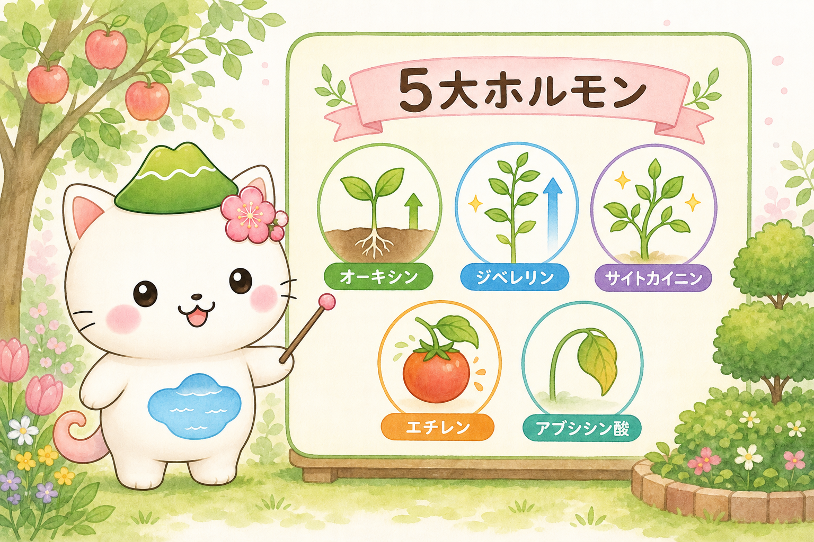
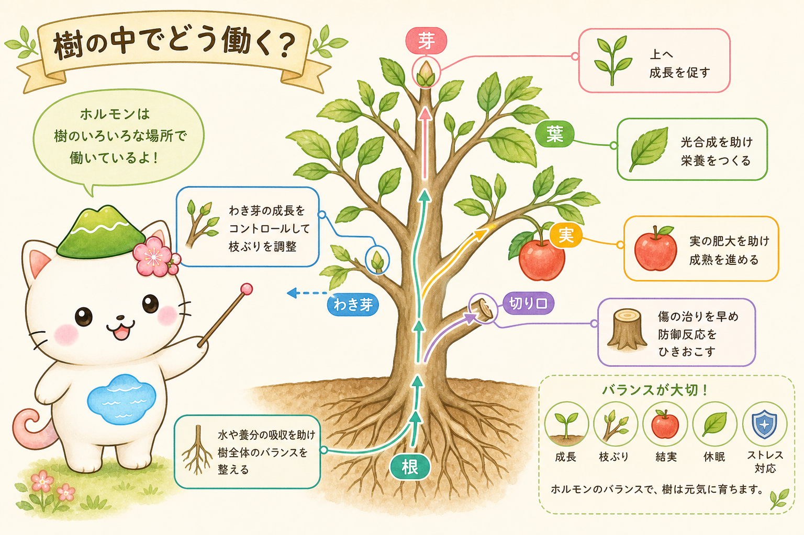
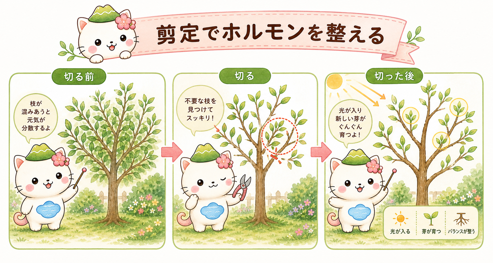

植物ホルモンって、なに？
植物ホルモンは、植物が自分の体の中でごく少しだけつくる物質です。芽の伸び方、枝分かれ、実つき、休眠（おやすみ）、傷への反応などを調整する、いわば体の中のメッセージです。
ポイントは、1つのホルモンが命令して終わりではないこと。複数のホルモンが押したり引いたりしながら、木の「次の動き」を決めています。だから剪定も、「ここを切ると、どのホルモンの効き方が変わり、どの芽が動くか」という目で見ると、見た目だけでなく次の芽吹きや実つきまで想像できるようになります。

名前をぜんぶ覚えなくて大丈夫。「伸ばす係」「芽を起こす係」「お休み係」みたいに、ざっくりの役割からつかんでいこうね。
覚えておきたい5つのホルモン
たくさんあるホルモンの中でも、まずはこの5つ。果樹や庭木の手入れでよく顔を出すメンバーです。名前とイメージをセットで、ながめる感じで読んでみてください。

枝先の芽でつくられやすく、「上へ伸びる」「先端を優先する」働きが強いホルモン。先端が元気だと、下のわき芽は動きにくくなります。どこを切るかで次に伸びる芽が変わるのは、この子のしわざです。
茎を伸ばしたり、芽の動き出しを助けたりする「伸び盛り」担当。春に勢いよく立ち上がる新梢（しんしょう）の背景にいます。勢いが強すぎる枝を残すか迷うときに意識したいホルモンです。
主に根でつくられ、細胞分裂やわき芽の動きを後押しします。枝数を増やしたいときや、切ったあとに新しい枝を出させたいときの味方。根が元気な木ほど、この力が効きます。
気体のホルモン。実の熟し方、葉や実が落ちる反応、傷を受けたときの変化に関わります。果樹の実つきや、傷んだ枝・古い枝の反応を見るときに思い出したい子です。
乾燥や寒さに備えて、葉の気孔（きこう）を閉じたり、休眠を保ったりする「守りのホルモン」。木がお休みに向かう時期や、切ったあとに無理をさせたくない場面のキーパーソンです。
ざっくり言うと、伸ばす3人組（オーキシン・ジベレリン・サイトカイニン）と、守り2人組（エチレン・アブシシン酸）。この分け方だけでも、剪定の話がぐっと読みやすくなるよ。
樹の中で、どこで働いているの？
ホルモンは、木の中のバラバラな場所で同時に働いています。枝先・葉・根・実・切り口——それぞれの持ち場をイメージできると、「この枝を切る」という行動が木全体にどう響くかが見えてきます。

枝先のオーキシンが「伸ばす枝」を決める
オーキシンは枝先でつくられ、上へ伸びる枝を優先させます。枝先を残すとその枝はさらに前へ進み、枝先を切ると、順番が下の芽に回ります。切る位置で「次の主役の枝」が変わる——これが剪定の出発点です。
根からのサイトカイニンが「わき芽」を押し出す
サイトカイニンは根から上がってきて、わき芽や若い組織の動きを助けます。根が元気な木ほど、切ったあとに新しい芽が吹きやすいのはこのため。若木では味方ですが、勢いの強い木では「芽が出すぎないように」切り方を穏やかにする必要があります。
実と傷ではエチレンが顔を出す
エチレンは実の成熟や落葉、傷への反応に関わります。古く弱った枝や実つきの悪い枝を整理して、残した枝へ光と養分を回す——そんな判断につながります。切り口の反応にも関わるので、むやみに傷を増やさないことも大切です。
「枝を切る」とホルモンはどう動く？
ここからが本番です。剪定を「ホルモンの調整」として見てみましょう。いちばん基本になるのは、オーキシンとサイトカイニンのコンビです。
枝先を切ると、先端から下へ流れていたオーキシンの影響が弱まります。すると、それまで抑えられていたわき芽が動きやすくなる。そこへ根からのサイトカイニンの後押しが加わると、切り口の近くから新しい枝が出てきます。「切ると、その下から芽が出る」のは、この2つの力の切りかえで説明できます。

切る前に「どの芽を伸ばしたいか」を先に決めるのがコツ。残したい芽のすぐ上で切ると、その芽が次の枝になってくれるよ。
切り戻しと間引き、どう使い分ける？
枝数を増やしたいなら「切り戻し」
枝の途中で短く切るのが切り戻し。先端のオーキシンが減り、サイトカイニンの後押しでわき芽が動くため、枝分かれが増えます。若木で骨格をつくりたいときや、ボリュームを出したいときに向きます。
勢いを落ち着かせたいなら「間引き」
枝を途中で詰めず、枝元から丸ごと抜くのが間引き。芽数を増やさずに混み合いを減らせるので、勢いが静かになり、内側まで光と風が通ります。古木や暴れ気味の木、樹形を保ちたい庭木で扱いやすい方法です。
つまり、増やしたいなら切り戻し、落ち着かせたいなら間引き。この使い分けの土台に、オーキシンとサイトカイニンの関係があります。
強く切るほど暴れるのはなぜ？
「すっきりさせよう」と強く切り戻したのに、翌春に勢いの強い枝（徒長枝）がボーボーと出てしまった——よくある失敗です。これもホルモンで説明できます。
強く切ると、枝先のオーキシンは急に減るのに、根から上がるサイトカイニンの勢いはすぐには消えません。そこへジベレリンが伸長を後押しすると、わき芽が一気に動き、勢いの強い枝が増えてしまうのです。さらに切り口が多いと、エチレンの傷反応も重なって木が疲れます。
だから剪定は「短く切るほどよい」ではありません。どのホルモンを強めたいかを考えて、加減する。迷ったら少なめに切り、次の反応を見てから次回に回すほうが安定します。
暴れさせたくない木は、短く詰めて芽を増やすより、混み枝を「抜く」ほうが落ち着くよ。一度で完成させようとしないのが、遠回りに見えていちばんの近道。
「切る時期」と「切る量」の見きわめ
守りのホルモン・アブシシン酸を意識すると、いつ・どれだけ切るかが見えてきます。木がお休みに向かう時期ほど、このホルモンの守りモードが強まります。だから「休んでいるから強く切っても平気」とは限りません。
とくに、弱っている木・植え替え直後の木・真夏の乾燥期や真冬の厳寒期は、守りに入っている木にさらに負担をかけがち。時期を選べるなら、木の勢いが落ち着き、なおかつ回復に向かいやすいタイミングで、必要な枝だけを整理するのが安全です。
果樹で実つきをよくしたいとき
果樹で、ジベレリンの効いた徒長枝ばかり残すと、枝や葉に力が回って花芽・実つきが不安定になりがちです。真上に強く伸びる枝や、混み合って光を奪う枝を間引き、残す枝に光を回すと、伸びる力が実つき側へ戻りやすくなります。
- 切る位置で次の主役の枝が変わる（オーキシン）。残したい芽のすぐ上で切る。
- 増やすなら切り戻し、落ち着かせるなら間引き（サイトカイニン）。
- 強く切るほど暴れやすい。少なめに切って様子を見る。
- 弱った木・極端な時期は控えめに（アブシシン酸の守り）。
はじめての人の3つの見方
むずかしく考えなくて大丈夫。剪定ばさみを持ったら、この3つを順番に見てみてください。
① まず「どの先端を止めるか」
オーキシンを見るつもりで。先端を残せば伸び、切れば下の芽が動きます。伸ばしたい方向の芽を残しましょう。
② 次に「増やしたいか、落ち着かせたいか」
サイトカイニンとジベレリンを見るつもりで。内向き枝・交差枝・立ちすぎた徒長枝から手をつけ、増やしたいなら切り戻し、静かにしたいなら間引きを選びます。
③ 最後に「傷を増やしすぎないか」
エチレンとアブシシン酸を見るつもりで。一度にたくさん切らず、迷ったら少なめに。次の反応を見てから次回へ回します。
まとめ
植物ホルモンを知ると、剪定は「形づくり」ではなく、ホルモンの効き方を少し調整する作業に見えてきます。オーキシンはどの枝を優先するか、サイトカイニンはどこから芽を吹かせるか、ジベレリンはどこで勢いがつくか、エチレンは傷や実の反応、アブシシン酸は守りとお休み。
まずは「どの先端を止めるか」「どの芽を動かしたいか」「この時期に強く切ってよいか」を考えながら、少しずつ切るところから。ホルモンの目で見るようになると、果樹も庭木も、剪定の理由がぐっとはっきりしてきます。
おつかれさま！ 次は、この考え方を実際の木で使ってみる回。庭木の定番「黒松」の剪定を、季節ごとにやさしく案内する記事を準備中だよ。